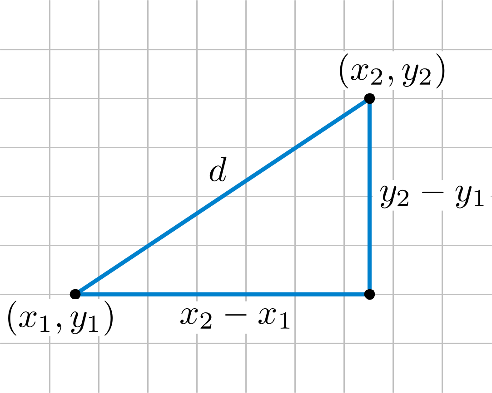

Distance Formula is when we are on Cartesian plane or anywhere in 2D than for calculating the diatance between any two points located
on plane ( i.e. ( x1 , y1 ) and ( x2 , y2 ) ) . we need a formula that is known as
distance formula

d = Distance Formula
let us solve a question to understand this better -
Example : find the distance between co-ordinate ( 2 , 3 ) and ( 4 , 1 ) .
Solution :
according to the question
d = √[( 4 - 1 )2 + ( 1 - 3 )2]
d = √[( 3 )2 + ( -2 )2]
d = √[ 9 + 4 ]
d = √13